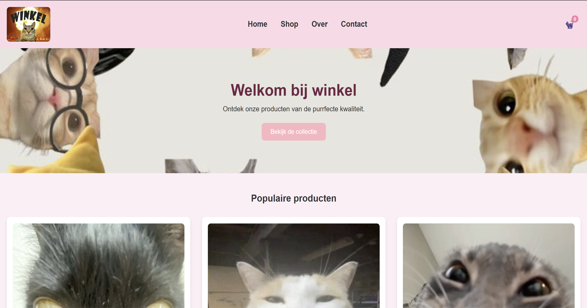
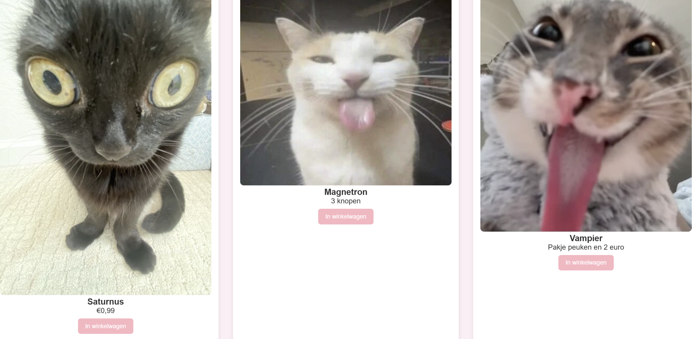
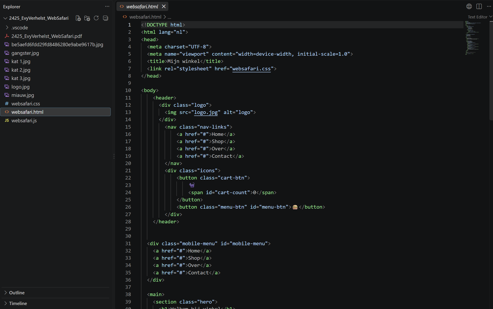
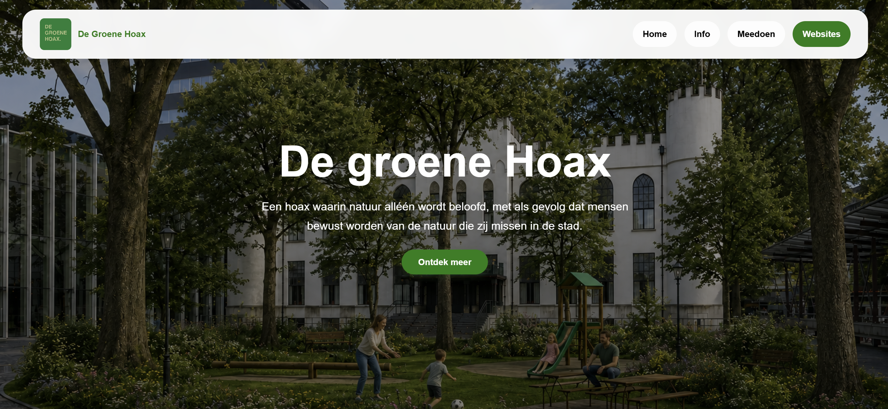
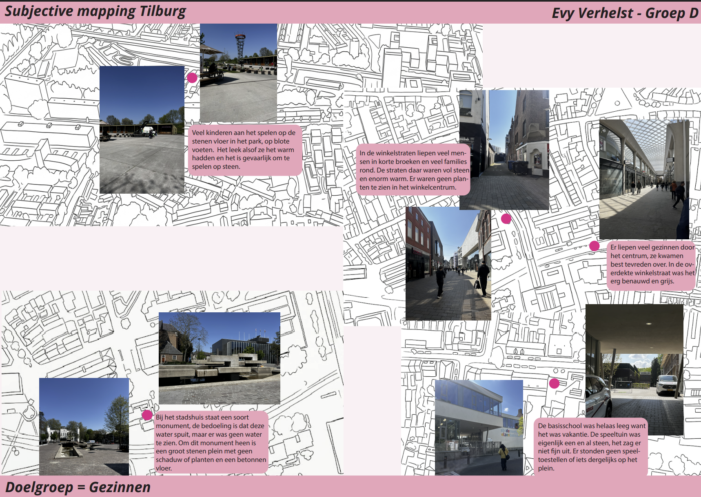
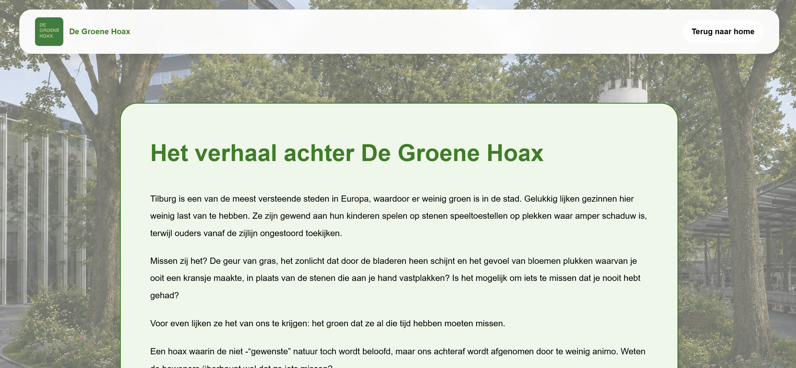

Interactieve webshop
Voor CT maakten we een webshop waarin we zelf aan de slag gingen met HTML, CSS en JavaScript. Ik koos voor katten als thema, waardoor ik het project ook visueel leuk kon maken. Een groot deel van de code heb ik zelf geschreven, waardoor ik tijdens dit project vooral veel heb geleerd over het opbouwen en stylen van een werkende website.
Ontwerpproces & Inzichten
Tijdens dit project merkte ik dat ik steeds zelfstandiger kon werken met code. Naast de vormgeving heb ik een groot deel van de HTML, CSS en JavaScript zelf opgebouwd.



De Groene Hoax
Voor dit project maakte ik een website rondom stadsnatuur in Tilburg. Uit ons onderzoek bleek dat mensen informatie vooral online opzoeken en daar niet te veel moeite voor willen doen. Daarom ontwierp ik een eenvoudige website waarop ons concept wordt uitgelegd en bezoekers kunnen ontdekken wat zij zelf kunnen doen voor een groenere stad.
Concept & Uitvoering
Ik heb de website visueel laten aansluiten bij de rest van ons concept door dezelfde groene kleuren, rustige vormgeving en beeldtaal te gebruiken. De informatie heb ik bewust kort en overzichtelijk gehouden. Daarnaast voegde ik links toe naar bestaande organisaties en initiatieven, zodat bezoekers zelf verder kunnen kijken.
Inzicht
Tijdens dit project merkte ik hoe belangrijk het is om onderzoeksresultaten daadwerkelijk te vertalen naar ontwerpkeuzes. Omdat onze doelgroep snel en makkelijk informatie wilde kunnen vinden, koos ik bewust voor een simpele en toegankelijke website.